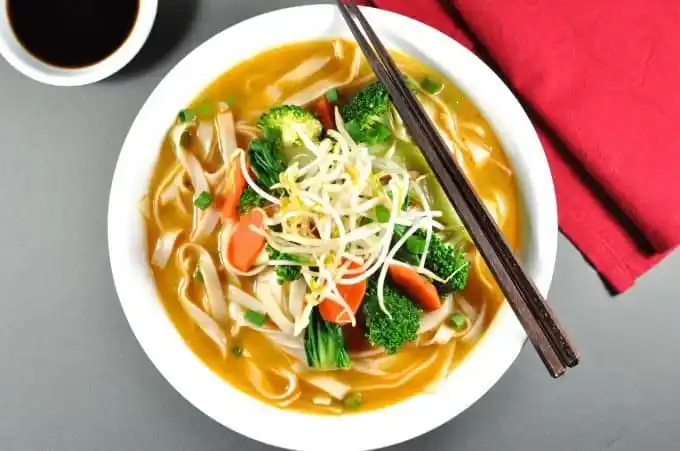

Dan Dan Noodle Soup (Vegetarian)
Recipe found here

Description
This Dan Dan Noodle Soup is a flavour explosion in a bowl, healthy (< 300 cal) and you’ll have it on the table in just over 10 minutes. The soup is thicker than the usual clear noodle soups, and the creamy colour is from the sesame paste (or tahini) and chilli paste. Traditionally it is made topped with stir fried pork, but today I’m sharing a meat free version which is my favourite way of making it – it’s faster and healthier. But just as tasty – a truly authentic flavour. A perfect midweek meal!
Ingredients
- 400 g dried rice stick noodles
- 4 cups vegetable or chicken stock
- 5 cups of water
- 3 large garlic cloves
- 2 tsp minced ginger
- 2 tsp sugar
- More Ingredients ...
Steps
- Combine stock ingredients in a large pot and bring to boil.
-
Meanwhile, mix the Stock Sauce ingredients together in a small bowl and cut all the vegetables into bite size pieces.
-
Add the Stock Sauce and mix well to dissolve into the soup. Adjust seasoning as required.
-
When the stock comes to a boil, place rice stick noodles in the stock, then 1 minute later add the carrots and broccoli, then 1 minute later remove from heat and add the bok choy stems.
-
Divide the noodles and vegetables between bowls, top with the bok choy leaves and bean sprouts.
Ladle soup into bowls over the vegetables and noodles, and garnish with spring onions.
-
Optional: finish with chilli oil and more chilli paste - if you can handle the heat!